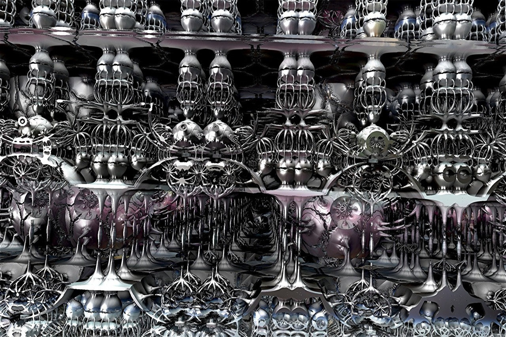
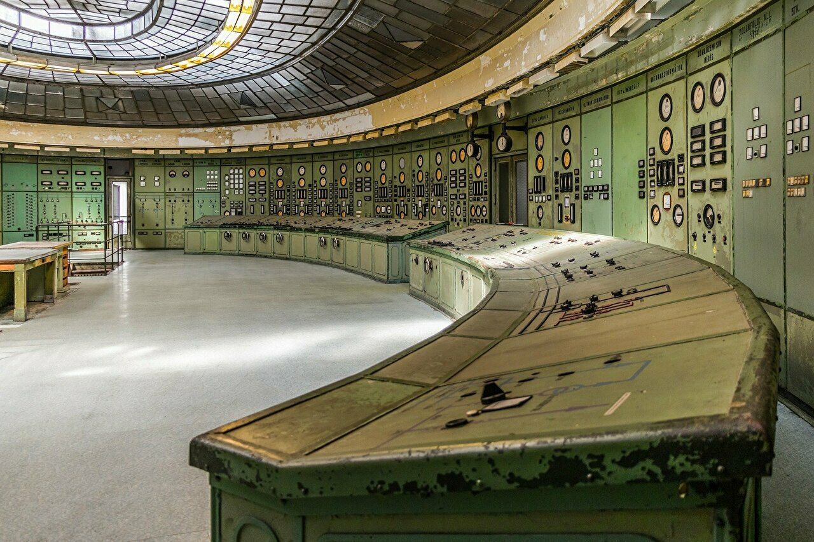
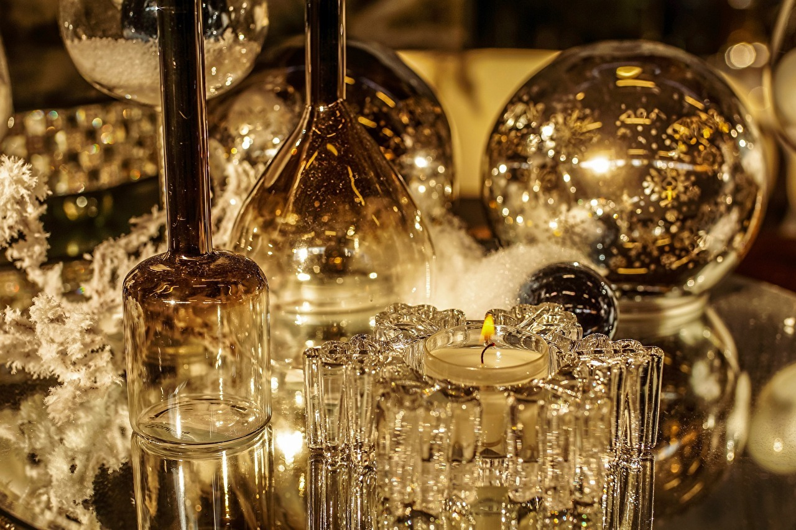
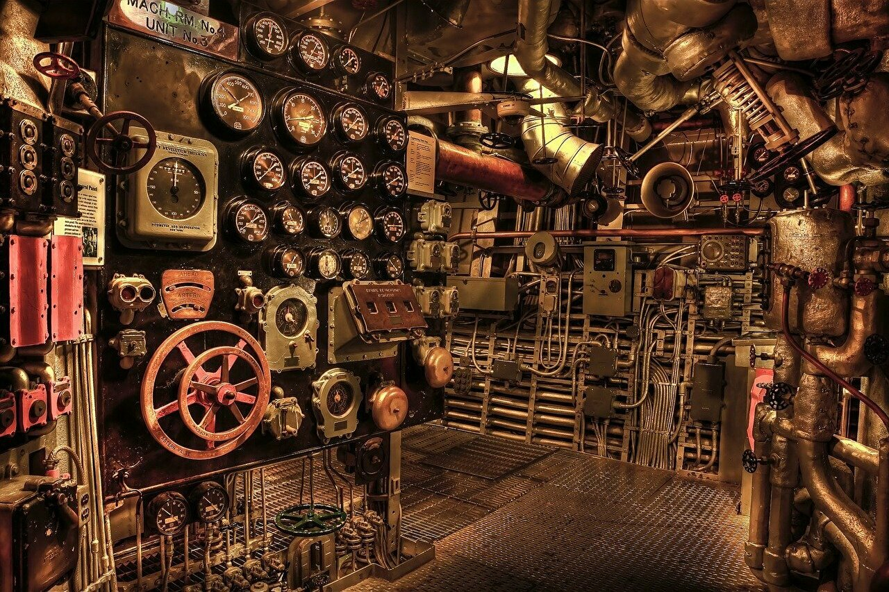

世界に接続されている、抵抗は様々
手を伸ばせば手をつなげる間隔で、すべての人が並んでいる。
片方は繋ぐ権利、もう片方は繋がれる義務。

どこに発したか電流が流れていて、世界を巡っている。
電流が流れてくると激痛が走るが、 ほとんどの人はもう片方の手を誰かにつなぎ、 電流を渡すことで、痛みを和らげている。
全員がそうすることにより、 最初の痛みをわずかに受けるだけで、 全員が耐え切れるという発想だ。

しかし中には、誰かに痛い思いをさせたくなくて、手を繋がない人がいる。
そういう人は痛みを独り受け続けることになり、耐えられずに死んでしまうこともある。
そういう人たちのお陰で電流の総量は減ってきている。
どこかには家族、友人、子どもが立っている。
また、病人、怪我人、弱者もいる。
人の間に立った当初「電流を誰かに渡すのはやめましょう」と教えられた。

電流を渡す人たちの半数は、 その教えは表向きのものであって、 現実に即したものではないと思っている。
残りの半数はその矛盾にすら気づかず、 電流を渡しながら、自らも新しい人に教える。

逆流はほとんど起こらない。
流れる方向は制御されているからだ。
電流は社会の厳しさとも言われる。
宗教で言うならば、
キリストはすべての電流を自分に繋ごうとした。
電流を渡さなかった人は、カルマから脱したとされる。